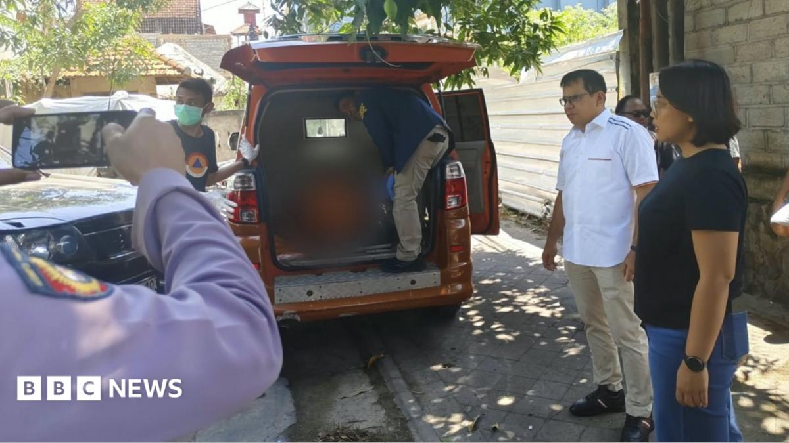

World · 14 Sep 2026
Bali Authorities Investigate Deaths of Australian Man and Two Children

Indonesian police are investigating the deaths of an Australian man and his two children in Bali following a welfare check requested by concerned family members.
Indonesian police are conducting an investigation into the tragic deaths of an Australian man and his two young children inside a bungalow located in a popular tourist area in Bali. According to reports from outlets such as BBC News, the incident has prompted a swift response from local law enforcement and expressions of grief from officials in Australia.
Discovery of the Bodies
The victims were identified as 56-year-old Damien John Shaw, originally from Fremantle in Western Australia, alongside his six-year-old son and four-year-old daughter. Their bodies were discovered on Sunday inside their home situated in Kuta. Australian media outlets have indicated that police are treating the case as a suspected murder-suicide.
However, law enforcement authorities have clarified that they have not yet officially determined the exact cause or manner of death. Further medical and forensic examinations are scheduled to be carried out to establish the full circumstances surrounding the tragedy.
Welfare Check Triggered by Phone Call
The sequence of events leading to the grim discovery began when the children's mother, who was not in Bali at the time of the incident, grew deeply concerned following a telephone conversation with her husband. During the call, she reportedly heard one of her children crying before she was suddenly unable to reach her husband again. In the preceding days, she had traveled to Indonesia's capital, Jakarta.
Prompted by her growing anxiety, the wife contacted a neighbour to check on the family's welfare. Accompanied by other local residents, the neighbour went to the property. After receiving no response to their repeated knocks, the group forced their way inside the bungalow, where they tragically found the three deceased family members and subsequently alerted the authorities.
Reactions and Next Steps
The news has sent shockwaves through the community, drawing a compassionate response from political leadership in Western Australia. Roger Cook, the premier of Western Australia, addressed the unfolding situation publicly, describing it as a "very confronting situation." He added, "This is a very sad situation; our hearts go out to everyone involved. We hope we can get to the bottom of what's gone on as soon as possible."
As the investigation continues, Indonesian police are expected to release further details once additional examinations and forensic tests are concluded. Comprehensive reporting on the ongoing inquiry can also be followed via coverage from The Guardian.
Sources
This article was produced by the C. O. Eric AI Newsroom from the cited sources. It is published only after automated evidence and safety checks.